USB User Guide
V1.1
2023/12/05
Revision History
| Version | Date | Description |
| V1.0 | 2023/06/19 | Stable Release |
| V1.1 | 2023/12/05 | Add CDC and Mass Storage Driver |
Contents
Table List
Figure List
Glossary
| Terms | Definitions |
| USB | Universal Serial Bus |
| UAC | USB Audio Class |
| HID | Human Interface Device |
| SDK | Software Development Kit |
| PC | Personal Computer |
| CFU | Component Firmware Update |
| API | Application Programming Interface |
| MIC | Microphone |
| HAL | Hardware Abstraction Layer |
| MSC | Mass Storage Class |
| CDC | Communications Device Class |
1 Introduction
The purpose of this document is to introduce USB configuration and give an overview of the USB SDK. USB SDK support multiple USB classes, such as USB audio, HID, MSC and CDC. This document gives a tutorial of USB configuration by MCU Config Tool. What's more, it would help you to be familiar with the architecture of the USB driver.
2 USB Configuration
The section elaborates configuration process by MCU Config Tool to make USB work. MCU Config Tool is provided in directory as illustrated below.
Firstly, enable USB audio and HID, and then choose USB speed, as illustrated in Figure 2-1.
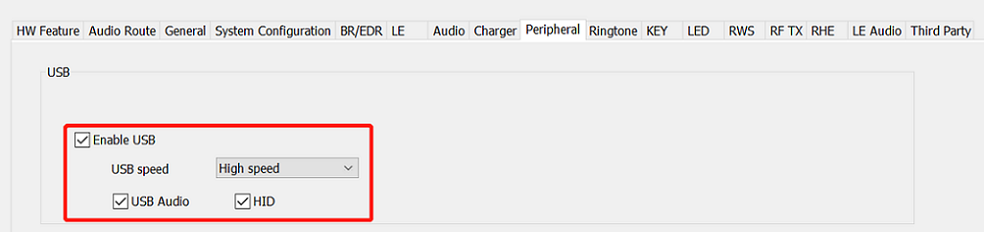
Figure 2-1 Enable USB Audio and HID
Because USB start/stop is triggered by adaptor in/out, the second thing is to enable adaptor, as illustrated in Figure 2-2.
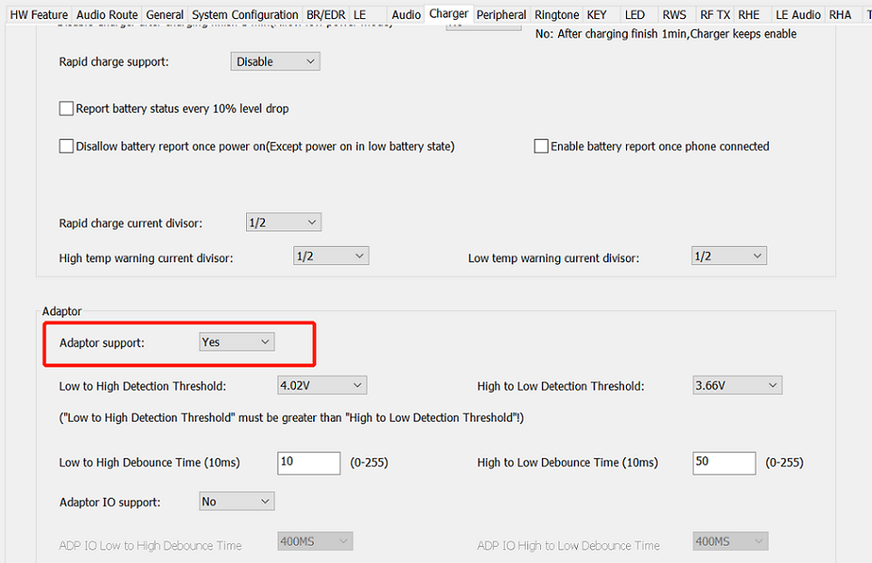
Figure 2-2 Enable Adaptor
In addition, choose "Allow" from "Allow power on function when charging" combobox, as illustrated in Figure 2-3.
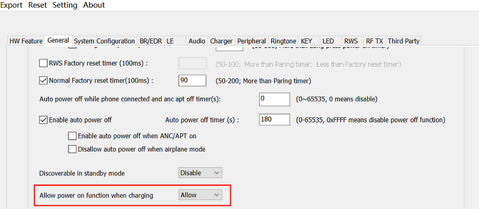
Figure 2-3 Allow Power On When Charging
For RTL87X3D, in system configuration, LDOUSB should be set as 3.3V as Figure 2-4.
Figure 2-4 LDOUSB Setting
3 USB SDK
The architecture of the USB SDK is shown in Figure 3-1.
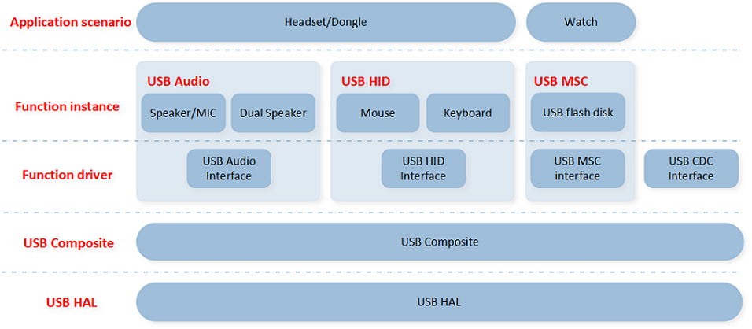
Figure 3-1 Architecture of the USB SDK
- USB HAL mainly provides hardware initialization and APIs for data transmission.
- USB composite mainly deals with the standard requests defined in Chapter 9 of the USB specification[1]. This module does not deal with interface-related requests, but it passes interface requests to the corresponding function driver to process.
- The function driver mainly handles requests defined by class specifications, and some interface-related standard requests.
- The initialization process needs to be bottom-up, HAL->composite->function driver->instance.
Table 3-1 lists the locations of USB modules introduced above.
Table 3-1 USB Modules Location
| USB modules | Location |
| USB HAL | /sdk/src/mcu/usb/hal/ |
| USB composite | /sdk/src/mcu/usb/lib/composite/ |
| function driver | /sdk/src/mcu/usb/lib/class/ |
| function instance | /sdk/src/sample/application/usb/ |
Note that application in Function instance can be rws, dongle, and etc.
This section mainly introduces the USB SDK, namely composite and class driver.
3.1 USB Composite
The USB composite device defines the device descriptor and configuration descriptor, and handles and filters all the requests. The flow is shown in Figure 3-2.
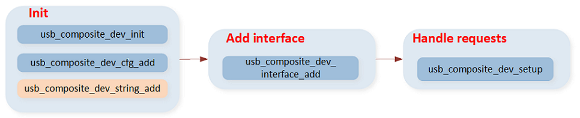
Figure 3-2 USB Composite Flow
- Initialize the USB device descriptor and configuration descriptor. If the string index of the USB device descriptor or USB configuration descriptor is not zero, string must be added.
- Add the interfaces of the specific class.
- After USB enumerates success, USB requests transmitted by the PC must be handled.
3.1.1 Interface Structure
The structure of the interface is as follows:
3.1.2 Request Handling
The USB request can be divided into several types. The request types are shown in Figure 3-3.
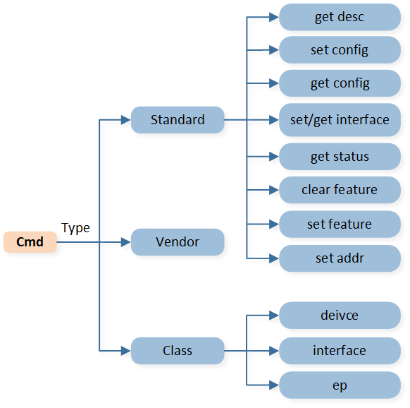
Figure 3-3 USB Request Types
USB command can be divided into standard, class and vendor command[1].
- The standard commands can also be divided into several types. These commands are handled following the USB specification[1].
- The vendor command is designed according to specific requirements.
- The class commands are divided into device, interface and endpoint. All class related commands will be processed in class-related files and will not be implemented in this module.
If you want to develop based on this layer, please refer to USB Composite in API reference.
3.2 USB Class Driver
The purpose of this section is to give an overview of the USB class drivers, namely USB audio driver, USB HID driver, USB MSC driver and USB CDC driver. Other classes will be implemented in the future.
3.2.1 USB Audio Driver
USB audio can be used for audio playback and recording.
USB audio driver support:
- UAC1.0 and UAC2.0
- Multiple audio streaming can work together.
- A single audio streaming contains multiple alternate settings.
The structure of USB audio class is shown in Figure 3-4.
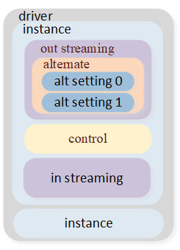
Figure 3-4 Structure of the USB Audio Class Driver
USB Audio consists of multiple interfaces, such as the control interface, the out streaming interface, and the in streaming interface, which are shown in Figure 3-5.
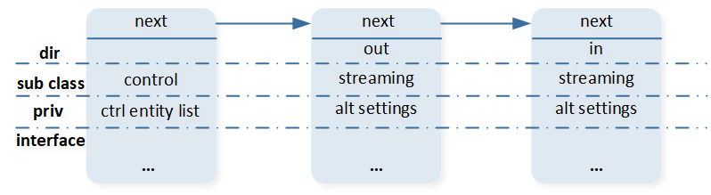
Figure 3-5 Instance Interface List
The usb audio init flow is shown in figure 3-6.
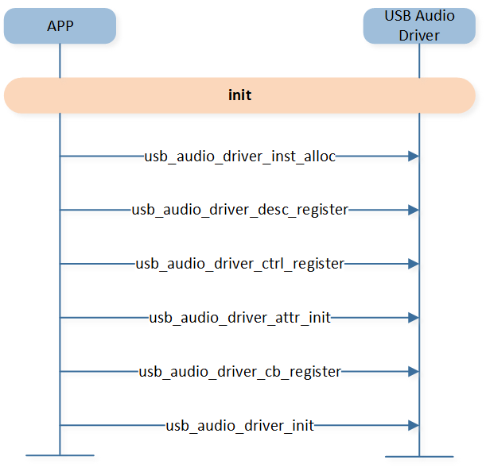
Figure 3-6 USB Audio Init Flow
- usb_audio_driver_inst_alloc will init a USB audio instance.
- The audio interface list items are allocated by usb_audio_driver_desc_register. For the control interface, the control entity list will be initialized. For the streaming interface, the alternate setting with the different alternate value will be inserted into the alternate settings list. In addition to attributes, other related resources will also be initialized.
- usb_audio_driver_ctrl_register will register the control entity list in the control interface.
- usb_audio_driver_attr_init will register the attribute in the alternate setting in each streaming interface.
- usb_audio_driver_cb_register will register data transmission related callbacks.
- usb_audio_driver_init will add interfaces to USB composite.
The structure of the driver is as follows:
typedef struct _usb_audio
{
T_USB_UTILS_LIST insts;
} T_USB_AUDIO;
The driver can contain multiple audio instances. The structure of the instance is as follows:
typedef struct _usb_audio_inst
{
struct _usb_audio_inst *p_next;
uint8_t uac_ver;
T_USB_UTILS_LIST if_list;
uint8_t iso_in_proc_interval;
uint8_t iso_out_proc_interval;
uint16_t iso_out_max_buf_size;
uint8_t *copy_buf;
} T_USB_AUDIO_INST;
The structure of the list item in the if_list is as follows:
typedef struct _usb_audio_if
{
struct _usb_audio_if *p_next;
uint8_t dir;
uint8_t sub_class;
uint8_t cur_alt;
union
{
T_ALT_SETTINGS *alt_settings;
T_USB_UTILS_LIST *ctrl_entity_list;
} priv;
void *owner;
} T_USB_AUDIO_IF;
For the control interface, the control topology is as follows:
{
#define T_USB_AUDIO_DRIVER_CTRL_ENTITY(id, num) \
struct _usb_audio_driver_ctrl_entity##id \
{ \
uint8_t entity_id; \
uint8_t ctrl_num; \
T_USB_AUDIO_DRIVER_CTRL *ctrls[num]; \
}
{
typedef struct _control_entity_item
{
struct _control_entity_item *p_next;
} T_CONTROL_ENTITY_ITEM;
For each control unit, the following points need to be implemented:
- T_USB_AUDIO_DRIVER_CTRL_ENTITY(id, num), where id is the unit id of the feature unit descriptor, and num indicates how many attributes have been controlled by the unit, such as the possibility that the feature unit may simultaneously control volume and mute.
- T_USB_AUDIO_DRIVER_CTRL controls a single attribute.
For the streaming interface, the alternate setting list is as follows:
typedef struct _alt_setting
{
struct _alt_setting *p_next;
uint8_t value;
} T_ALT_SETTING;
typedef struct _alt_settings
{
union
{
uint32_t data;
struct
{
uint32_t freq: 24;
uint32_t rsv: 8;
} uac2;
} cs;
T_ALT_SETTING *cur;
T_USB_UTILS_LIST list;
void *owner;
} T_ALT_SETTINGS;
If you want to develop based on this layer, please refer to the USB AUDIO DRIVER.
3.2.2 USB HID Driver
The USB HID can be used for mouse, keyboard, CFU, etc.
USB HID driver support:
- multiple interfaces
- each interface with multiple endpoints
The structure of the USB HID class is shown in Figure 3-7.
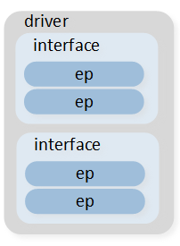
Figure 3-7 Structure of the USB HID Class
- Initializing an interface requires calling the function usb_hid_driver_if_desc_register to register the interface and its corresponding report descriptors, and then initialize the functions in the interface, and insert them into if_list in the T_USB_HID structure.
- usb_hid_driver_cbs_register can bind set_report and get_report callbacks to the interface. It can transmit data from the app through set_report and get_report requests.
- usb_hid_driver_init will add interfaces to USB composite.
The structure of the driver is as follows:
typedef struct _usb_hid
{
T_USB_UTILS_LIST if_list;
} T_USB_HID;
The driver can contain multiple HID interfaces. The structure of the interface is as follows:
typedef struct _usb_hid_if
{
struct _usb_hid_if *p_next;
uint8_t cur_alt;
} T_USB_HID_IF;
If you want to develop based on this layer, please refer to USB HID DRIVER.
3.2.3 USB MSC Driver
The USB mass storage can be used for USB flash disk. This driver only supports Bulk-Only Transport, and does not care which command set specification and storage medium are used.
The structure of the USB mass storage class is shown in Figure 3-8.
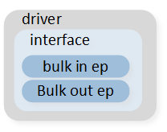
Figure 3-8 Structure of the USB Mass Storage Class
The driver only include an interface with two bulk endpoints.
- Initializing an interface requires calling the function usb_ms_driver_if_desc_register to register the interface, and then initialize the functions in the interface.
- usb_ms_driver_disk_register can register disk-related operations. These callbacks can access sdcard.
- usb_ms_driver_init will add interfaces to USB composite.
The structure of the driver is as follows:
typedef struct _usb_ms
{
uint8_t cur_alt;
void *pipe_tx;
void *pipe_rx;
uint32_t mtu_tx;
uint32_t mtu_rx;
uint32_t xfer_len;
uint32_t remaining_len;
int cur_cbw_tag;
T_USB_MS_STATUS ms_status;
} T_USB_MS;
If you want to develop based on this layer, please refer to USB MS DRIVER.
3.2.4 USB CDC driver
The This driver support virtual port com to communicate with computer. The driver completes data transmission through two bulk eps.
The structure of the USB mass storage class is shown in Figure 3-9.
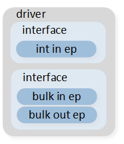
Figure 3-9 Structure of the USB Communication Device Class
- Initializing an interface requires calling the function usb_cdc_driver_if_desc_register to register the interface, and then initialize the functions in the interface, and insert them into if_list in the T_USB_CDC structure.
- usb_cdc_driver_init will add interfaces to USB composite.
The structure of the driver is as follows:
typedef struct _usb_cdc
{
T_USB_UTILS_LIST if_list;
} T_USB_CDC;
The driver can contain two cdc interfaces. The structure of the interface is as follows:
typedef struct _usb_cdc_if
{
struct _usb_cdc_if *p_next;
uint8_t cur_alt;
} T_USB_CDC_IF;
If you want to develop based on this layer, please refer to USB CDC DRIVER.
Appendix
[1] Universal Serial Bus (USB) Specification, Version 2.0